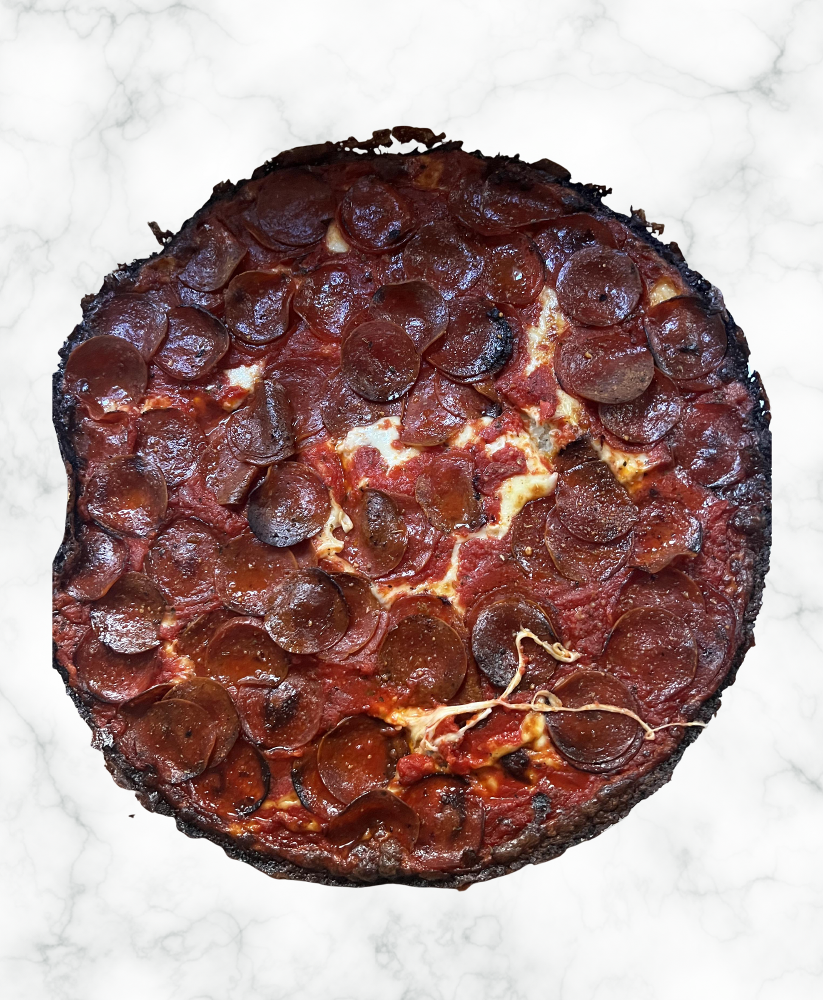

A FOOD COMPARISON
One Dish, Two Traditions
Drag the slider to compare Neapolitan pizza with Chicago-style deep-dish pizza and explore how Italian pizza traditions evolved in Chicago.

← Drag to compare →
What's the difference?
Although both pizzas share a connection to Italian culinary traditions, Neapolitan pizza and Chicago-style deep-dish developed into very different dishes. Neapolitan pizza is thin in the center with a soft, raised crust. Traditional versions use a relatively small number of ingredients, including tomato, mozzarella, basil, and olive oil. The pizza is stretched by hand and cooked quickly in a very hot oven. Chicago-style deep-dish takes a very different approach. Its thick crust creates a deep base for layers of cheese, toppings, and tomato sauce. The style emerged in Chicago in 1943 at Pizzeria Uno and eventually spread throughout the city and beyond. The contrast shows that a culinary tradition can change as it moves into a new place. Pizza existed in Chicago before deep-dish was created. The Chicago style developed from an existing pizza tradition into something with its own shape, ingredients, preparation, and identity.
Neapolitan Pizza
Traditional Neapolitan pizza is characterized by a thin, soft center and a raised, puffy crust, known as the cornicione. The Associazione Verace Pizza Napoletana (AVPN) specifies that traditional Neapolitan pizza is made from a simple dough of flour, water, salt, and yeast. Classic toppings include tomato, mozzarella, fresh basil, and extra-virgin olive oil. The pizza is traditionally cooked in a wood-fired oven at very high temperatures for about 60–90 seconds.
Chicago-Style Deep-Dish Pizza
Chicago-style deep-dish pizza emerged in Chicago in 1943 with the opening of Pizzeria Uno. Unlike Neapolitan pizza, deep-dish is built with a thick, pastry-like crust and substantial layers of cheese and toppings. Tomato sauce is placed over the other ingredients, and the pizza is baked for much longer than Neapolitan pizza.